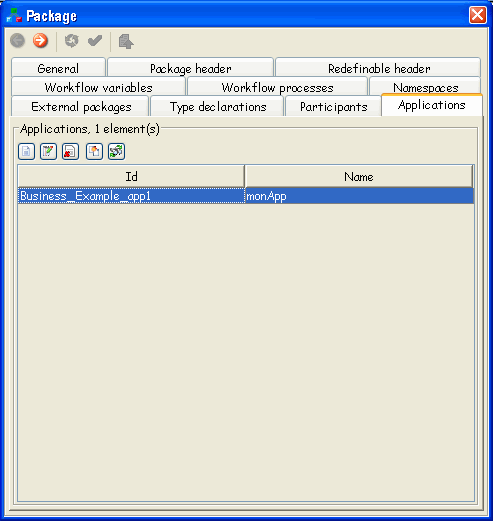

These are some of the attributes for application entity which are defined by WfMC specification:
Table 4.14. General attributes
| Name | M/O | Description |
|---|---|---|
| Id | M | Used to identify the workflow application definition. |
| Name | M | Text used to identify an application (may be interpreted as a generic name of the tool). |
| Description | O | Short textual description of the application. |
| Extended attributes | O | Optional extensions to meet individual implementation needs. |
| Invocation Parameters | O | Parameters that are interchanged with the application via the invocation interface. |
 | There is more than
one way of getting Workflow Application
Declaration settings. One way would be, for example,
choosing icon |

User can create new instance for application entity, edit some existing application or delete it (modification and deletion of application entity is not allowed if it is the entity from externally referenced package). This picture shows a property panel for editing application attributes: |
|
Workflow applications that are defined for the package are accessible by any activity that is defined at any package's workflow process.
When defining a Tool for an activity, you'll be able to chose amongst all applications defined inside the particular WorkflowProcess definition, Package definition, or inside definition of the Package's external packages. If the application from the process level has the same Id as the one from the package level (it overrides the one from the package level), the one from the package level won't be displayed. The same stands for overriding the application from external package.
As it is shown on the picture, there are two choices for Invocation Parameters:
Formal Parameters and
External Reference
| Formal Parameters are parameters that are interchanged with the application via the invocation interface. They are passed during invocation and returned of control (e.g. of an invoked application). The order of formal parameters can be changed by dragging an item with the mouse. Using appropriate toolbar buttons, you can create a new FormalParameter, edit, delete or duplicate selected one, as well as to get all the references to the selected FormalParameter. |
The attributes that define Formal Parameters are:
Table 4.15. Formal Parameters
| Name | M/O | Description |
|---|---|---|
| Id | M | Identifier for the parameter |
| Index | O | Index of the parameter |
| Mode | M |
|
| Data Type | O | Data type of the formal parameter |
| Description | O | Textual description of the formal parameter |
An External Reference can be used instead of formal parameters. External Reference is a reference to an external definition of an entity.
External Reference has the following attributes:
Table 4.16. External Reference
| Name | M/O | Description |
|---|---|---|
| Xref | O | It specifies the identity of the entity within the external document. |
| Location | M | It specifies the URI of the document that defines the type. |
| Namespace | O | It allows specification of the scope in which the entity is defined. |
With External Reference, Application
(and some other entities) may be defined by XML schema (for e.g.
location = http://abc.com/schemas/po.xsd), by a
Java class (for e.g. location =
"com.abc.purchases.PO"), by WSDL document (for e.g.
location =
"http://abc.com/services/poService.wsdl")...